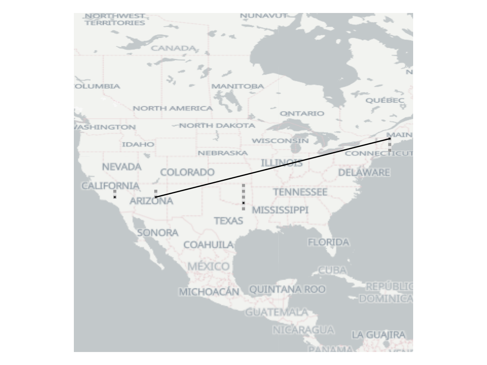
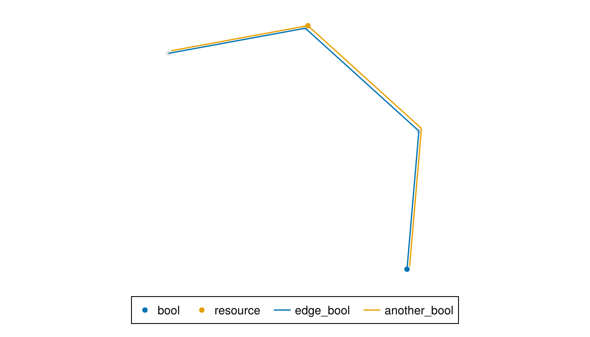

Register Visualizations
This page is the reference for QuantumSavory's register plotting helpers.
For a guided interactive example, start with the State Explorer tutorial. This page is for looking up the available visualization entry points once you already know what you want to inspect.
QuantumSavory provides visualization tools built on top of Makie.jl. For network construction, graph access, and indexing, read Register Networks.
The plotting functions generally return a tuple of (subfigure, axis, plot, observable). The observable can be used to issue a notify call that updates the plot with the current state of the network without replotting from scratch. This is particularly useful for live simulation visualizations.
The quantum registers in the network
The registernetplot_axis function can be used to draw a given set of registers, together with the quantum states they contain. It also provides interactive tools for inspecting the content of the registers (by hovering or clicking on the corresponding register slot). Here we give an example where we define a network and then plot it:
using CairoMakieCairoMakie.activate!()using QuantumSavory# create a network of qubit registersnet = RegisterNet([Register(2),Register(3),Register(2),Register(5)])# add some states, entangle a few slots, perform some gatesinitialize!(net[1,1])initialize!(net[2,3], X₁)initialize!((net[3,1],net[4,2]), X₁⊗Z₂)apply!((net[2,3],net[3,1]), CNOT)# create the plotfig = Figure(size=(800,400))_, ax, plt, obs = registernetplot_axis(fig[1,1],net)fig
The tall rectangles are registers, the gray squares are the slots of these registers, and the (connected) black diamonds denote when a slot is occupied by some subsystem (of a potentially larger) quantum state.
The visualization is capable of showing tooltips when hovering over different components of the plot, particularly valuable for debugging. Quantum observables can be directly calculated and plotted as well (through the observables keyword).
Other configuration options are available as well (the ones ending on plot let you access the subplot objects used to create the visualization and the ones ending on backref provide convenient inverse mapping from graphical elements to the registers or states being visualized):
propertynames(plt)(:transparency, :_extras, :colormap, :args, :converted, :visible, :space, :observables, :regnet, :inspector_hover, :scale, :observables_markersize, :observables_linewidth, :slotmarker, :inspector_label, :state_markersize, :dim_converted, :registercoords, :state_markercolor, :arg1, :palettes, :cycle, :f32c, :state_linecolor, :colorrange, :lock_marker, :observables_marker, :slotcolor, :model, :slotsize, :dim_conversions, :convert_kwargs, :transform_func, :cycle_index, :state_marker, :register_color, :inspectable, :inspector_clear)Plotting Registers on a Background Map
If your registers have latitude and longitude coordinates (ranging from -180 to 180), you can plot them directly on a map. One way is to use generate_map function to create the map as a plotting axis using the package 'Tyler'. Here's how you can do this with the registers defined earlier:
using Tylercoords = [Point2f(-118, 34), Point2f(-71, 42), Point2f(-111, 34), Point2f(-96, 32)]subfig, ax, map = generate_map()fig, ax, plt, obs = registernetplot_axis(ax, net, registercoords=coords, state_linecolor = :black)fig
In general, if you have a custom background axis, you can use it as the axis parameter in registernetplot_axis.
State and tag metadata in interactive visualizations
When working with interactive plots, you can also hover over different parts of the visualization to see the registers, what is stored in them, and potentially whether they contain any tagged metadata in use by simulated networking protocols.
Here is what the data panels look like. (showmetadata is used to force-show the panel, but when working interactively you simply need to hover with the cursor)
fig
QuantumSavory.showmetadata(fig,ax,plt,1,1)fig
And here with some extra tag metadata.
tag!(network[2,3], :specialplace, 1, 2)tag!(network[2,3], :otherdata, 3, 4)QuantumSavory.showmetadata(fig,ax,plt,2,3)fig
The state of locks and various metadata in the network
The resourceplot_axis function can be used to draw all locks and resources stored in a meta-graph governing a discrete event simulation. Metadata stored at the vertices is plotted as colored or grayed out dots depending on their state. Metadata stored at the edges is shown as lines.
using Graphsusing ConcurrentSimsim = Simulation()# add random metadata to vertices and edges of the networkfor v in vertices(net) net[v,:bool] = rand(Bool) net[v,:resource] = Resource(sim,1) rand(Bool) && request(net[v,:resource])endfor e in edges(net) net[e,:edge_bool] = true net[e,:another_bool] = rand(Bool)end# plot the resources and metadatafig = Figure(size=(700,400))resourceplot_axis(fig[1,1],net, [:edge_bool,:another_bool], # list of edge metadata to plot [:bool,:resource], # list of vertex metadata registercoords=plt[:registercoords] # optionally, reuse register coordinates)fig
Updating the plots
You can call notify on the returned plot object to replot the state of the network after a change.